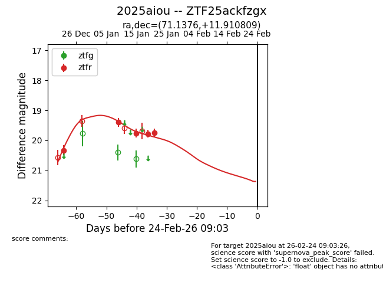
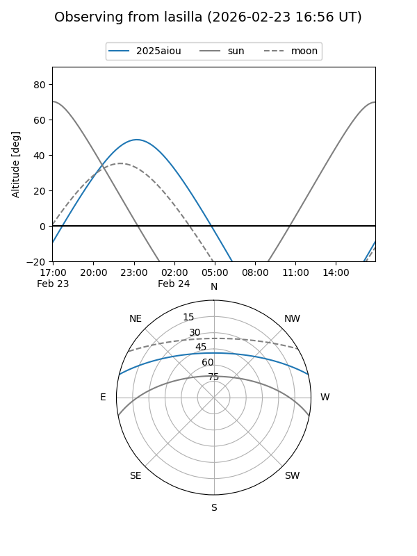
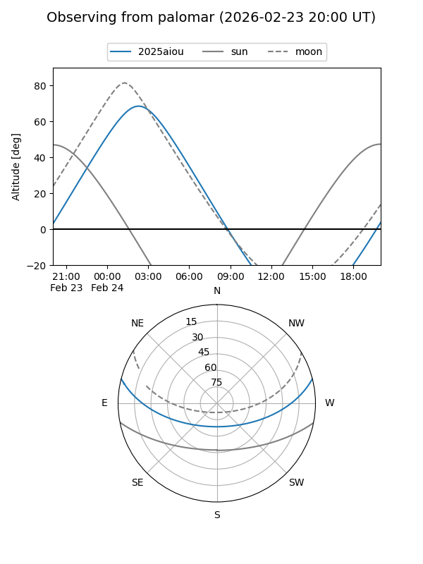
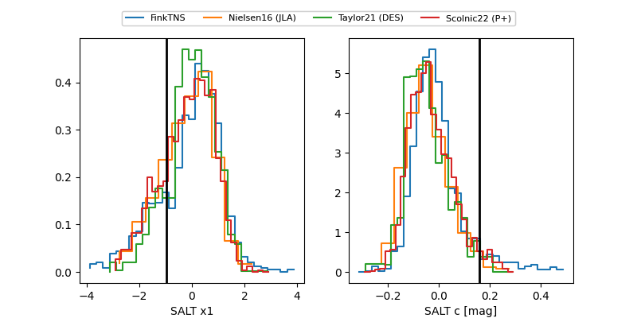

2025aiou
Target 2025aiou at 2026-01-21 04:50
Aliases and brokers:
FINK: link
Lasair: link
ALeRCE: link
TNS: link
YSE: link
alt names
ZTF25ackfzgx (ztf,fink_ztf)
2025aiou (tns,yse)
Coordinates:
equatorial (ra, dec) = 71.1376,+11.91081
equatorial (HMS+DMS) = 04:44:33.02,+11:54:38.91
galactic (l, b) = (186.2498,-21.33178)
Flags:
Photometry:
last ztfr=19.75
5 ztfr detections
Lightcurve

Visibility


Additional plots
